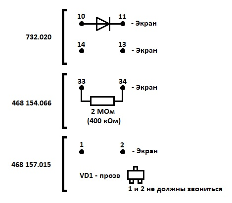
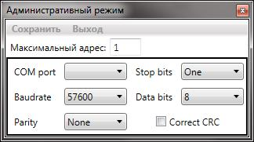

БДКС-07. Настройка
- После получения блоков проверить:
- питание 3,35 и 1,2 В
- пайку кабелей
- проверить пайку и прозвонить: 
- Проверить кабель между .015 и .020, все провода должны быть параллельны.
- Подать питание +5В, проверить потребление ~60 мА.
- Запрограммировать (программируются как и БДКГ-11М, прошивки находятся в том же архиве).
- Присвоить номера.
- Запустить программу BDKS Utility. Ввести такие параметры: 
- Жмякнуть “Устройства” → “Поиск”, выбрать из списка блок, жмякнуть “Устройство” → “Настройка”.
- С помощью терминала подать команду “Режим настройки” (в строке ожидаемый ответ ввести 8), записать ID
- команда – “Писать ID”:
01 13 08 ff 24 00 04 00 0A 12 20 (в строке ожидаемый ответ
ввести 13)
01 – интер. адрес
13 - номер команды
08 - количество байт в команде
ff 24 - адрес идентификатора данных
00 04 - количество байт данных
00 0А - серийный номер
12 - год
20 - неделя производства - Переподключиться к блоку со сбросом питания блока, проверить верность записанных ID данных.
- Открыть “Регистры управления”,”Регистры данных”, “Альфа канал”, “Бета канал”.
- Выставить начальные установки:
- Высокое напряжение (.020 точка С49.VD7) ~ 72В кодом высокого напряжения ~13500 или заменой R41.
- Zero level ~ 140-150 на плате .015 D10(напряжение 3-4).
- Нижний порог ~ 55 мВ, код ~ 1050.
- Длительность накачки светодиода – 5
- Отрезка каналов ~10
- Дискриминаторы:
- Гамма 1-10000
- Бета 12-50
- Альфа 80-500
- Взять у Жуковского А.Г. источники C-14(N С-81), Sr (N2127), Pu (N2133)
- Поместить блок в свинцовую защиту.
- Изменяя начальные установки, добиться:
- фоновых показаний:
- по бета-каналу: не более 0,75 импульса/сек. (лучше меньше хотя бы на 0,02), при длительности измерения 1000 сек.
- по альфа каналу: не более 0,001 имп/сек (программа не отображает такую точность, посчитать счет/время).
- Чувствительности к излучению C14 не меньше 7%. Добавить для БДКБ (770 имп/сек для N C-81).
- Кросс-фактор не более 5% для всех источников, время измерения - 50сек.
- После успешного выполнения предыдущих пунктов проверить чувствительность к Sr (не менее 80% - 210имп/сек для N2127) и Pu (не менее 70% - 154 имп./сек для N 2133. В случае внесения изменений в настройки перепроверить пункты 1-3.
- Включить отображение Led, выставить пик светодиода в 191 канал с помощью “СКУ” и R40 .020.
- Установить код высокого напряжения ~4500 (включится светодиодная стабилизация)
- Убедиться, что пик светодиода установился в 191 канал.
- Выключить отображение Led.
- “Прочитать”-”Регистры управления”
- Перепроверить выполнение условий пунктов 1-4 .
- Сохранить спектры и скриншоты с открытыми “Регистры управления”,”Регистры данных”, “Альфа канал”, “Бета канал”
- Записать электрические параметры:
- Нижний порог
- Zero level
- Напряжение D11.6
- Напряжение D12.6
- Высокое
- фоновых показаний:
- Отдать на сборку блоков.
- Передать блоки в сектор радиометрии и спектрометрии.